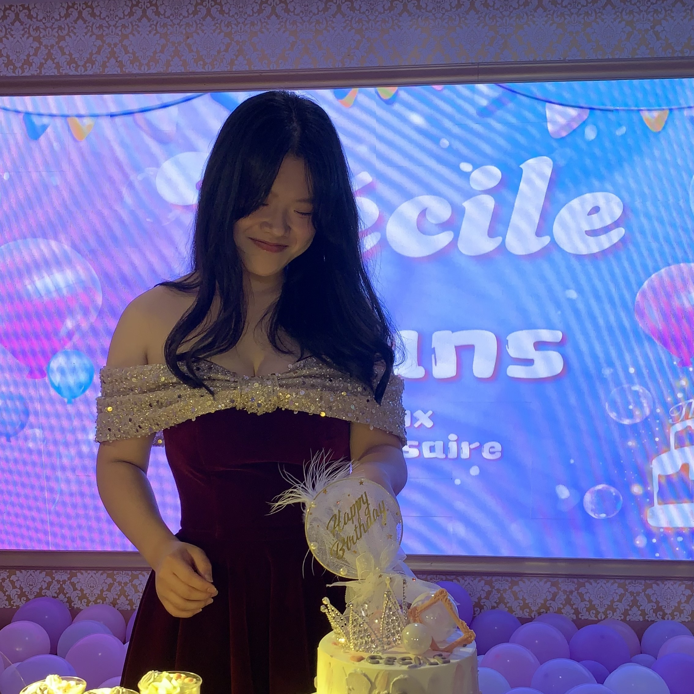
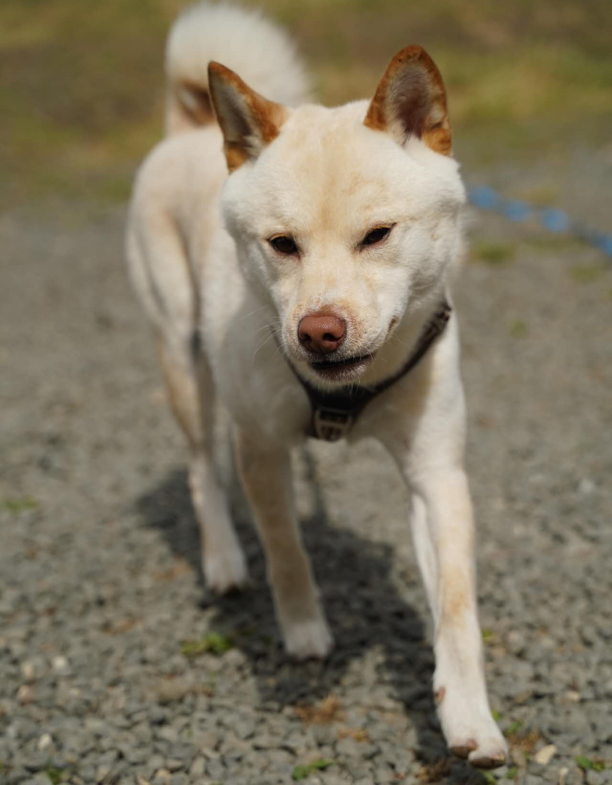
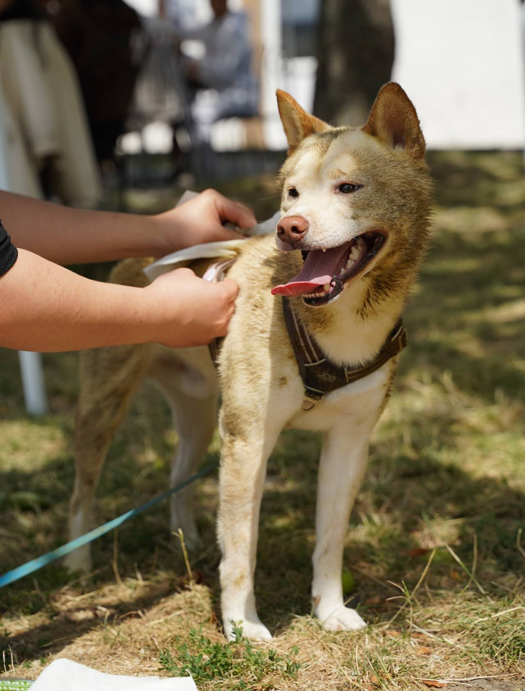

Hi, I'm Cécile
I am deeply interested in east-asian cultures, especially the chinese, korean and japanese ones. I attach great importance to skincare. I also love my family and my dog.
DISCOVER DEWYHANBANGEAST-ASIAN CULTURES
I am especially passionate about the chinese, japanese and korean cultures. It's been quite some time that I have been really invested in korean tv series called k-drama. Here are my top favorites:


MY FAMILY
My family is my number one priority in life. We're 8 so it's quite a task to have everyone gathered in on place at the same time. But when it happens, those are always special to me.Special shout out to my dog Ranger!(Quite a troublemaker but I love him nonetheless)
 